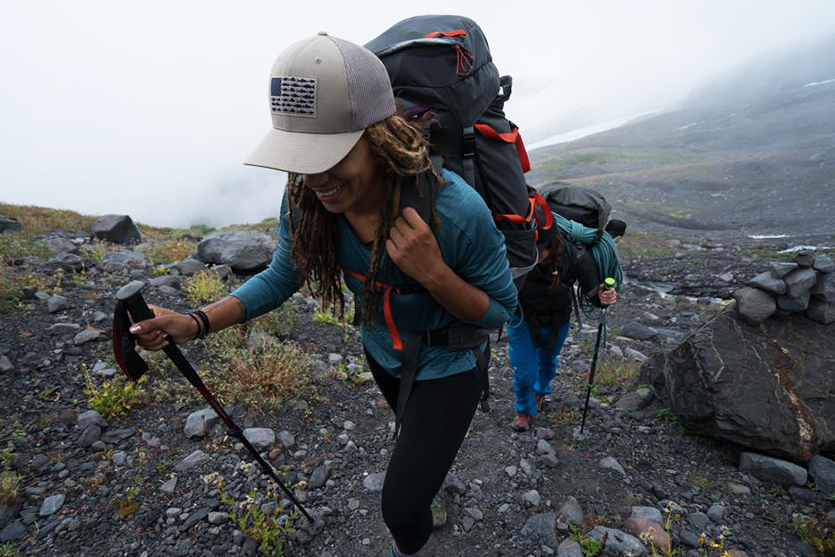

Target Audience
My target audience for Weather on the Horizon is to anyone who wakes up with adventure on their mind. Whether they are skiing the slops of the Sierra Nevada's or surfing the slopes off the shores of San Diego, this site will help them plan for all situations. It will give you an accurate weather forecast throughout the day and what the prediction is for the next couple of days.
Personas
Jake
Jake is what we know as the average bro. Although his grades might be suffering, you can be sure to see him shredding the slopes or hitting the trails on the long board. In order for his adventures to be the best, he needs to ensure that his adventures inclue only the best weather. He checks the weather every morning from his iPhone.
Kiersten
Kiersten is an avid hiker. If there is a trail in her area, you can bet she has been on it. She wakes up every morning on a quest to find the secrets that nature holds on those well-trodden trails. In order to ensure a safe and enjoyable trail, she checks the weather from her laptop to see how the weather will affect the hike.
Scenarios
- How are the ski slopes looking today?
- Will there be fresh snow for the resorts?
- What will the view be like from the top of Mount Shasta?
- Is today a good day for a hike?
- Will the beach be nice and sunny or dark and rainy?